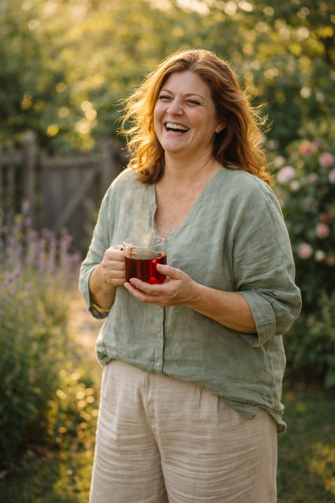

I lost 34 lbs and dropped my blood pressure from 164/98 to 122/79 — with one cup of tea every morning.
Six months ago I was on two blood pressure medications and crying in a Walmart parking lot because my jeans wouldn't button.
I don't say that to be dramatic. I say it because I know some of you are there right now.
The fatigue. The brain fog. The number on the scale that won't move no matter what you try. The quiet fear that your body is slowly giving up on you.
I was there. And then something changed.
My cardiologist had just told me my blood pressure was at 164/98 — dangerously high. He added a second medication. I went home, sat in my car, and didn't even go inside for 20 minutes.
The pills made me dizzy. My ankles swelled. I had a cough that wouldn't quit. And I was still getting heavier.
"I was doing everything right and getting worse. That's when I started questioning everything."
A friend texted me a video about something called homocysteine — a toxic compound that builds up in your arteries, spikes blood pressure, and literally locks your body into fat-storage mode.
I'd never heard of it. My doctor had never mentioned it.
But apparently, over 40% of people with stubborn belly fat and high blood pressure have elevated homocysteine — and have no idea.
The video mentioned a tea blend formulated around specific botanicals shown in studies to flush homocysteine and reactivate the body's natural fat-burning. It was called CardioSlim Tea.
I rolled my eyes. Then I watched the free video anyway.
Then I ordered it.
The first week — nothing dramatic. But the taste was surprisingly lovely. Earthy, warm, a little floral. Not medicine. Actually something I looked forward to.
Week two — I slept through the night for the first time in months.
Week three — I stepped on the scale. Down 9 lbs. I hadn't changed a single thing I was eating.
"My doctor stared at the blood pressure monitor. Then stared at me. '131/82?' she said. 'What are you doing differently?'"
By month three — 34 lbs gone. Blood pressure: 122/79. She's already talking about reducing my medication.
I'm not a miracle. I'm just someone who finally found the thing that actually worked.
"Lost 28 lbs. BP went from 158/96 to 119/74. My doctor used the word 'remarkable.' I've never felt this alive in my 60s."
Here's what CardioSlim Tea actually does — in plain English, not science-speak:
Flushes homocysteine from your arteries so blood can flow freely again
Switches off the "fat-storage panic mode" that keeps weight locked in
Naturally lowers blood pressure — without the dizzy spells or dry cough
Gives you steady, clean energy all day — no caffeine, no crash
Works with your body, not against it — 100% botanical, zero stimulants

"I was skeptical — I've tried everything. But within 6 weeks I lost 22 lbs and my BP dropped 38 points. My husband started it too. We both feel 10 years younger."
The video they put together explains the whole science behind it — why homocysteine is the real culprit, how the botanicals fix it, and why nothing else has worked for you until now.
It's free. It's 4 minutes. And honestly — it might be the most important 4 minutes you spend this year.
If your body has been sending you warnings — the fatigue, the numbers at the doctor, the clothes that don't fit — don't wait until those warnings get louder.
Give yourself 90 days. That's it. That's all I did.
— Sandra M., 52, Ohio
These statements have not been evaluated by the FDA. This product is not intended to diagnose, treat, cure, or prevent any disease. Results vary. Individual results are not guaranteed and depend on diet, exercise, and health conditions. Always consult your physician before starting any supplement. This page contains affiliate links. ClickBank® is a registered trademark of Click Sales, Inc.